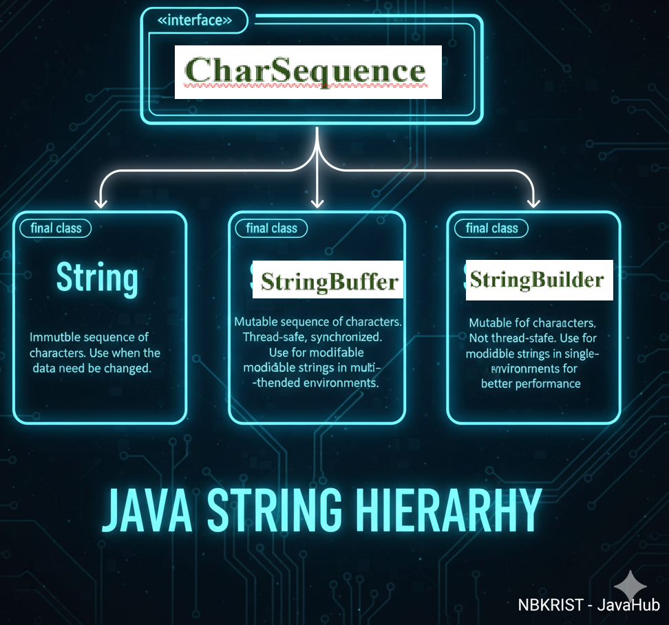

Industry Expert View on Java Strings
As a software engineer with industry experience, I have extensively used Java Strings in projects ranging from user input validation and file parsing to generating dynamic content for applications. Strings are a fundamental building block in Java, and mastering their handling is essential for any developer aspiring to write clean, high-performance, and reliable Java applications.
1. Introduction to String Handling

Strings are sequences of characters, widely used in Java for text manipulation, data exchange, and user interactions.
2. Interface CharSequence
CharSequence represents a readable sequence of characters and is implemented by String, StringBuilder, and StringBuffer.
String sampleText = "NBKRIST";
CharSequence charSeq = sampleText;
System.out.println(charSeq.charAt(0)); // Output: N
3. Class String
String objects are immutable. Any modification produces a new String object. Strings are widely used in Java for storing text, file paths, messages, and data input/output. Being immutable makes String objects thread-safe and efficient for fixed text data.
String course = "Java";
String fullCourse = course.concat("FX");
System.out.println(fullCourse); // Output: JavaFX
4. Class StringBuffer
The Java StringBuffer class represents a sequence of characters and is mutable, allowing in-place modifications without creating new objects. It provides methods like append(), insert(), delete(), and reverse() for efficient string manipulation. StringBuffer is thread-safe because its methods are synchronized, making it suitable for multi-threaded environments. It is ideal for situations where strings change frequently, like building dynamic messages or large text processing.
StringBuffer message = new StringBuffer("Hello");
message.append(" World");
System.out.println(message); // Output: Hello World
Tip: If you are not expecting your program to be thread-safe,use StringBuilder,It is faster than StringBuffer because its methods are not synchronized.
5. Difference between String and StringBuffer
String objects are immutable, meaning any modification creates a new string in memory, which can be less efficient for frequent changes. StringBuffer objects are mutable, allowing modifications like append, insert, or delete without creating new objects, making them faster for heavy string manipulation. String is generally used when the content doesn’t change often, while StringBuffer is preferred for dynamic modifications. StringBuffer is also thread-safe due to synchronized methods, whereas String is naturally thread-safe because it’s immutable.
public class StringVsStringBufferExample {
public static void main(String[] args) {
// Using String (immutable)
String str = "Hello";
str.concat(" World"); // Attempt to modify
System.out.println("String after concat: " + str);
// Output: Hello → original string unchanged
// Correct way to modify a String
str = str.concat(" World");
System.out.println("String after reassignment: " + str);
// Output: Hello World
// Using StringBuffer (mutable)
StringBuffer sb = new StringBuffer("Hello");
sb.append(" World"); // Modify directly
System.out.println("StringBuffer after append: " + sb);
// Output: Hello World → object modified in place
// Convert StringBuffer to String
String newStr = sb.toString();
System.out.println("Converted to String: " + newStr);
// Output: Hello World
}
}
6. Methods of Extracting Characters or Substrings
charAt
Returns the character at a specified index.
String name = "NBKRIST";
System.out.println(name.charAt(2)); // Output: K
substring
Extracts a part of the string between specified start and end indexes.
String name = "NBKRIST";
System.out.println(name.substring(2, 5)); // Output: KRI
7. String Comparison and Checking
equals
Checks if two strings have identical content (case-sensitive).
String input1 = "Java";
String input2 = "java";
System.out.println(input1.equals(input2)); // Output: false
equalsIgnoreCase
Checks equality ignoring case differences.
String input1 = "Java";
String input2 = "java";
System.out.println(input1.equalsIgnoreCase(input2)); // Output: true
regionMatches
Compares specific regions of two strings for equality.The regionMatches method compares a specific region of one string with a region of another string. You pass the starting index of each string, the length of the region, and it returns true if the regions match (indexing starts at 0). You can also pass true as the first argument to ignore case while comparing.
String string1 = "Application";
String string2 = "Appetite";
System.out.println(string1.regionMatches(0, string2, 0, 3)); // Output: true
startsWith
Checks if a string starts with a given prefix.
String role = "Developer";
System.out.println(role.startsWith("Dev")); // Output: true
endsWith
Checks if a string ends with a given suffix.
String filename = "Developer.java";
System.out.println(filename.endsWith(".java")); // Output: true
8. Modifying Strings
replace
Replaces occurrences of a substring with another string.
String yearInfo = "NBKRIST 2025";
System.out.println(yearInfo.replace("2025", "2026")); // Output: NBKRIST 2026
concat
Joins two strings together.
String lang = "Java";
String framework = "FX";
System.out.println(lang.concat(framework)); // Output: JavaFX
join
Combines multiple strings with a specified separator.
String date = String.join("-", "2025", "10", "16");
System.out.println(date); // Output: 2025-10-16
split
Splits a string into an array based on a delimiter.
String csv = "A,B,C";
String[] arr = csv.split(",");
System.out.println(arr[1]); // Output: B
toUpperCase
Converts all characters of the string to uppercase.
String language = "java";
System.out.println(language.toUpperCase()); // Output: JAVA
toLowerCase
Converts all characters of the string to lowercase.
String language = "JAVA";
System.out.println(language.toLowerCase()); // Output: java
9. Searching Strings
indexOf
Finds the index of the first occurrence of a substring or character.
String tech = "Technology";
System.out.println(tech.indexOf("nology")); // Output: 4
charAt
Returns the character at a specified index (same as above but included here for searching context).
String company = "NBKRIST";
System.out.println(company.charAt(4)); // Output: I